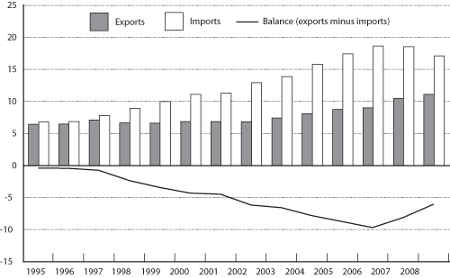

Excel | CSV | Table Version
(Millions of TEUs)
SOURCES: 1995-2004: U.S. Department of Transportation, Research and Innovative Technology Administration, Bureau of Transportation Statistics, based on data from U.S. Department of Transportation, Maritime Administration, which are drawn from The Journal of Commerce, Port Import and Export Reporting Service (PIERS). 2005-2007: Data from the U.S. Department of Transportation, Maritime Administration, 2008: Estimate based on PIERS Trade Horizon estimate of annual percentage growth from 2007 reported at www.joc.com, as of March 19, 2009.